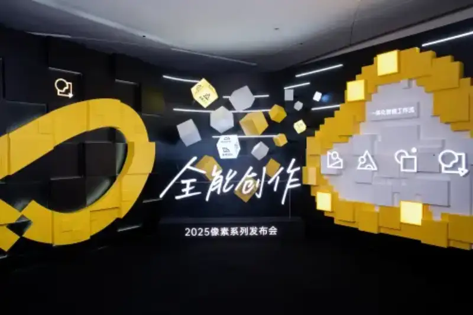
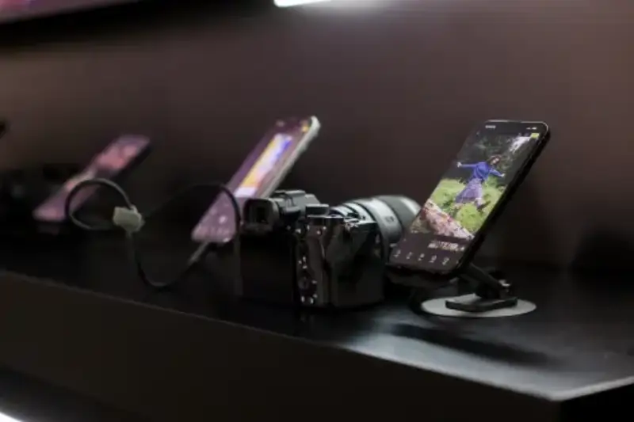

On July 16, Pixel Cake, the top brand by market share in China's commercial AI photo retouching, held an All-in-One Creative launch event in Shanghai. It unveiled an upgraded Pixel series product lineup and built an all-scenario ecosystem of online tools, Pixel Cloud space, and offline services. This event pushed the boundaries of AI retouching once again. With its integrated intelligent workflow, it broke the efficiency bottleneck of traditional commercial photography and gave commercial photographers a full-chain solution that runs from shooting and creation to revenue.

The core highlight of the event was the Pixel series integrated intelligent workflow. It is the first smart solution in the industry to connect AI with the full workflow. Driven by low learning cost and high automation, the Pixel workflow brings commercial photographers a flywheel of value that combines results, efficiency, and profit. Field data shows it delivers more than 200 percent revenue growth for commercial users. Take common cases such as children's photography and travel photography. What used to take 3 days to retouch, select, and deliver is now compressed to 3 minutes under the Pixel series automatic handling, a 1440-fold gain. On top of that, the Pixel Cake plus Pixel Soda plus Pixel Cookie combo lets clients approve the final layout on the same day as the shoot, with zero wait between shooting, retouching, and delivery.
The smart links inside Pixel Cloud turn features such as Magic Album creative animation, Pixel Cheese paid downloads, and Pixel Cookie layout and photo selection into a perpetual revenue engine. Commercial users speed up delivery and use creative content to drive a second sale. Its flexible full-chain support covers more than 20 photography scenarios, including weddings, at-home newborn shoots, travel photography, e-commerce, and live streaming. It builds an efficient monetization path for each niche.
In the competitive field of image editing, the technical breakthrough of Pixel Cake's in-house Cube Engine is clearly the industry focus. Take image segmentation as an example. Its three innovations redefine the standard for fine image processing:
Nanometer-level segmentation accuracy. Through its exclusive panoptic segmentation, it reaches pixel-level edge recognition. Even fine structures such as strands of hair and eyelashes stay crisp and separate. This fully solves the jagged, rough edges of traditional AI cutouts.
Cross-region collaborative computing. Its new multi-level semantic association model makes image blending transition naturally. For example, it matches the light between a portrait and its background, and keeps material texture consistent. This achieves the visual logic rebuild of a professional retoucher.
A global semantic map. It not only recognizes known objects, but also judges unknown entities, such as special props and complex scene elements. It dynamically matches the best segmentation strategy, so fine image processing is no longer limited to a single region.
The breakthrough of the Cube Engine achieves cross-region, multi-level collaborative computing of semantic information. It truly delivers professional-grade fine image processing and provides the firmest guarantee for the final result.
Notably, in a global imaging market long dominated by international giants, Pixel Cake broke the monopoly wall with its China-made technology. It became the first domestic company to master the core technology of the 16-bit AI Raw engine. Previously, this technology was firmly held by only two international firms, Adobe and Capture One. Pixel Cake's breakthrough marks China's move from following to keeping pace in high-end imaging. This cements Pixel Cake's top position in image processing and builds a strong competitive moat. Compared with common 8-bit processing, the 16-bit AI Raw engine breaks the precision limits of traditional imaging, and restores shadow detail and highlight layers almost perfectly. Paired with AI algorithms, the 16-bit AI Raw engine analyzes the color, light, and texture of an image in real time. Without losing quality, it automatically optimizes noise control, dynamic range, and color balance, and it escapes the trade-off between noise removal and image quality.
Most impressive, Pixel Cake 8.0, deeply powered by the Cube large model, has become the most complete AI toolkit to date. The Cube large model is also the first application-level image large model in the photography industry to pass official filing. Backed by tens of billions of parameters, the Cube model understands and handles more complex and varied photography scenarios. From AI staging and smart removal to AI prop repair and background blur, it corrects even complex, tedious scenes with ease.
After the well-received Pixel Cake iPad version last year, Pixel Cake now released an iPhone version. It is a lighter Pixel Cake with no compromise on quality, a professional mobile retouching tool. The iPhone version now supports more than 200 camera models, including Canon, Sony, Nikon, and Fujifilm. Support for Ricoh cameras will arrive in the third quarter. The full-featured tethered shooting, RAW adjustment, and AI color matching of the iPhone version will free users from the computer and let creation fit into daily life.

Today, Pixel Cake has earned customer approval and driven hundreds of millions of discussions on social platforms, sparking a wave of tethered shooting. Based on its leadership in AI retouching, it received the title of Top Brand by Market Share in China's Commercial AI Retouching from the authoritative research firm iResearch. The title came from iResearch's deep market analysis and brand evaluation. It reflects the approval of more than 250,000 photographers for its nanometer-level retouching precision and 200 percent full-chain efficiency gain. It also shows Pixel Cake's ten years of technical depth in AI imaging and its ability to build an industry ecosystem.
At the end of the event, the Pixel series teased a new product for the fourth quarter, Pixel Toast. Pixel Toast targets a brand-new field: automated video processing. With years of R&D, Pixel Cake combines strong image effects and precise color adjustment, plus AI, to make cinematic video portrait processing possible. In the live demo, Pixel Toast Video offered dozens of precise portrait tools, such as blemish and acne removal and neutral-gray skin smoothing, with a quality that rivals manual retouching. The new multi-frame processing, combined with AI, delivers extreme stability. The beauty effect stays smooth and steady, and it transitions seamlessly even in motion scenes without breaking the shot. Most impressive, all of these effects support full export at 4K ultra-high resolution.
As a leader in the intelligent transformation of commercial retouching, Pixel Cake drives the industry from labor-intensive to creativity-driven, through the twin engines of technical efficiency and creative release.